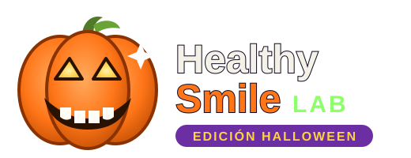

Dientes relucientes: 0%
Espuma de baba
¡Abre la boca bien grande!
Has derrotado a todos los bichos de caries
Has estado con la boca abierta 0 segundos
En casa, cepíllate dos veces al día durante dos minutos...
¡sobre todo después de los caramelos!